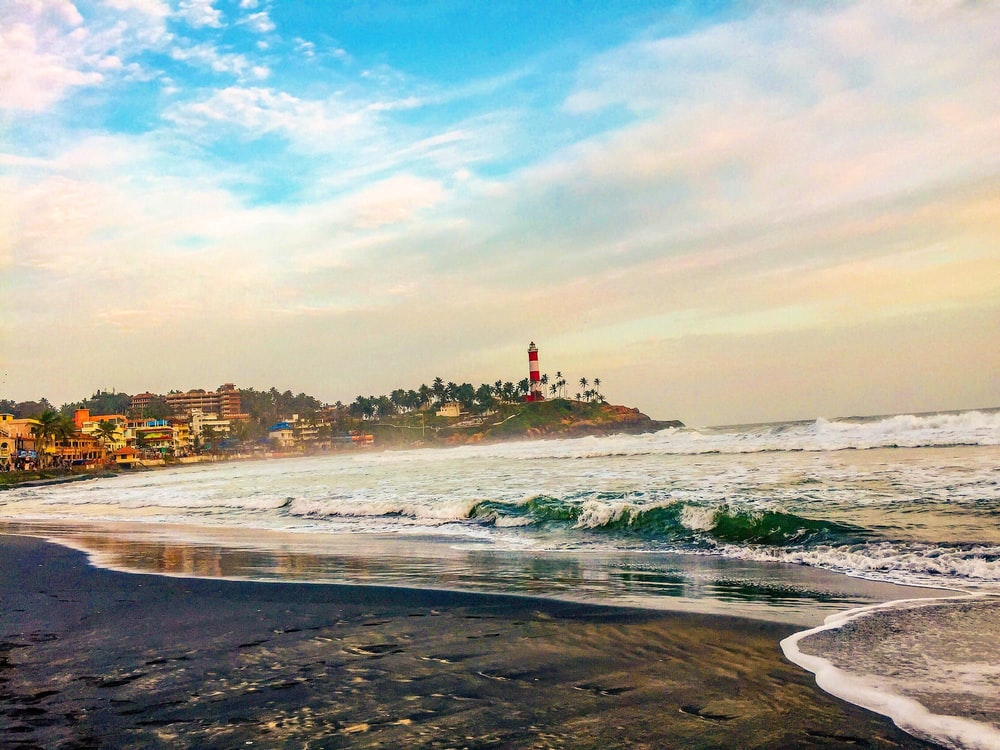
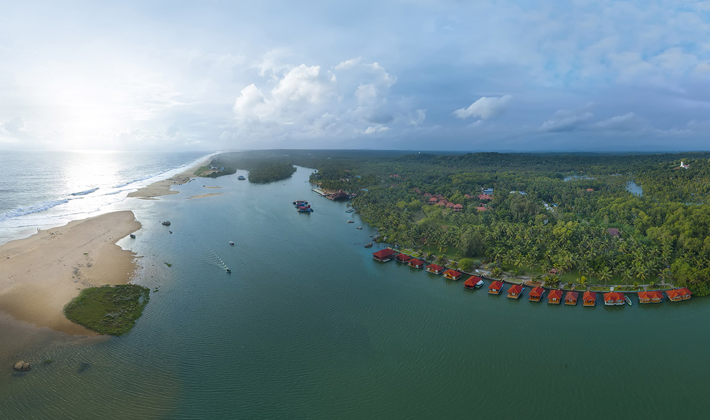
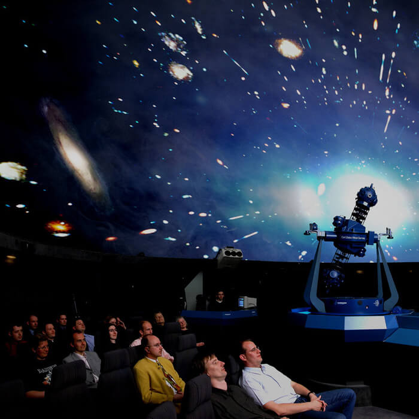

1 / 3

Kovalam Beach
Kovalam is an internationally renowned beach with three adjacent crescent beaches.
It has been a favourite haunt of tourists since the 1930s. A massive rocky promontory on the beach has created
a beautiful bay of calm waters ideal for sea bathing.
2 / 3

Poovar Island
Poovar Island is famous for its undisturbed natural beauty. Once you have enjoyed the uninterrupted view of the confluence of the river, lake, backwaters and the sea then you can plan some fun-filled
activities at Vizhinjam Marine Aquarium and Kovalam Surf Club.
3 / 3

Priyadarshini Planetarium
Opened in 1994 to the public, this is one of the most versatile planetariums in the country.
The main GM-11 star field projector here can project almost all the constituents of the visible universe.
It can also simulate the star-studded night sky over any location on the earth, on any day up to 12,500 years back or
12,500 years into the future.
The planetarium will be closed on Mondays.
❮
❯